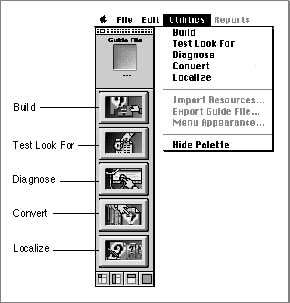
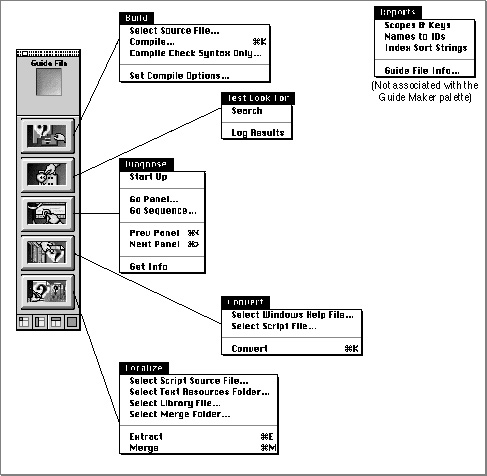

Legacy Document
Important: The information in this document is obsolete and should not be used for new development.
Important: The information in this document is obsolete and should not be used for new development.


Guide Maker Overview
When you launch Guide Maker, besides the menus, you see a palette with five buttons. This palette represents the Utilities menu graphically and gives you another way of selecting that menu's utilities. To access a utility, you can click the button that represents it in the palette or choose it from the menu itself (see Figure 4-2).Figure 4-2 Accessing Guide Maker's utilities

Here's how your four tasks correspond to the five Guide Maker buttons:
When you select a utility, Guide Maker displays a window specific to this utility and adds a corresponding menu to the menu bar. For example, if you choose the Build utility, Guide Maker displays the Build window and adds the Build menu to the menu bar. To accomplish your building tasks, you can use either the commands in the Build menu or the buttons in the Build window. Figure 4-3 illustrates the menus associated with Guide Maker's utilities.
- To build your guide file, use the Build utility.
- To test your guide file, use the Test Look For or the Diagnose utility (the difference between these two utilities is described in the chapter "Testing Your Guide File").
- To localize your guide file, use the Localize utility.
- To convert a Windows help file to a Guide Script file, use the Convert utility.
Figure 4-3 Using Guide Maker's menus

Note that the Reports menu, shown to the right in Figure 4-3, is not directly associated with any of the utilities. It is, unlike the other menus, always visible in the menu bar. (The Reports menu is discussed in the chapter "Testing Your Guide File.")